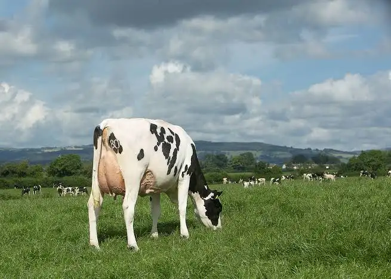

La ganadería o pecuaria es una actividad que consiste en el manejo y explotación de animales domesticables con fines de producción, para su aprovechamiento (algunos ejemplos incluyen la industria láctea, avicultura, piscicultura y porcicultura). En cambio, el manejo de animales pertenecientes a especies silvestres (no domésticas) en cautiverio o en semicautiverio se conoce con el nombre de zoocría.
¿Qué es la ganadería?

Nota: imagen descargada de ABS Global
Tipos de ganadería
- Ganadería Intensiva: El ganado se cría en entornos cerrados o establos con alta tecnología para aumentar la producción en el menor tiempo posible.
- Ganadería Extensiva: Los animales pastan al aire libre en grandes extensiones de terreno, alimentándose de pastos naturales.
- Ganadería Mixta: Combina técnicas de la ganadería extensiva e intensiva, aprovechando pastos y suplementación alimenticia.
Otra forma de ganadería
- Ganadería Silvopastoril: Integra árboles, arbustos y pastos en el mismo terreno, mejorando la calidad del suelo y ofreciendo sombra al ganado.
- La ganadería regenerativa: Destaca como una alternativa sostenible que alinea la producción con la naturaleza. Se enfoca en restaurar suelos, capturar carbono y aumentar la biodiversidad usando pastoreo rotacional.
Principales Ejemplos de Ganadería
- Ganadería Bovina (Vacuno): Cría de vacas y toros para carne o leche.
- Ganadería Porcina: Cría de cerdos para la producción de carne.
- Ganadería Avícola: Producción de aves (pollos, gallinas) para carne o huevos.
- Ganadería Ovina: Cría de ovejas para lana, leche o carne.
¿Cómo saber si la ganadería es para mí?
Nota: Video descargado del SENA (YouTube)
¿Cómo saber si la ganadería la puedo hacer?
Saber si la ganadería es para ti implica evaluar tu pasión por el campo, capacidad de inversión, paciencia y compromiso con el bienestar animal y la sostenibilidad. Se requiere dedicación diaria, planificación, conocimientos en nutrición/pastos y un enfoque en rentabilidad a largo plazo.
Cuidadores
Los cuidadores y mayordomos son el motor diario de cualquier proyecto ganadero. Su conocimiento del comportamiento animal, la tierra y los ciclos climáticos garantiza la salud del hato y la eficiencia productiva de la finca.
| Jefe de departamento | Animales a cargo | Empleado | Finca |
|---|---|---|---|
|
Luis carlos perez |
Vacas | Miguel castro alzate | La Gloria |
| Pollo | Ana fonseca | La Porra | |
|
Felipe giraldo |
Caballos y Mulas | Juan tamayo | Los Sueños |
|
Albeiro gomez |
Armando trujillo | La Ilución | |
Audio libro descargado de musopen.org